在jenkins中安装nodeJs插件
因为我们的项目是要用到node打包的，所以先在jenkins的插件管理中安装nodeJs插件，安装后进入全局工具配置，配置一个我们要用到的node版本。
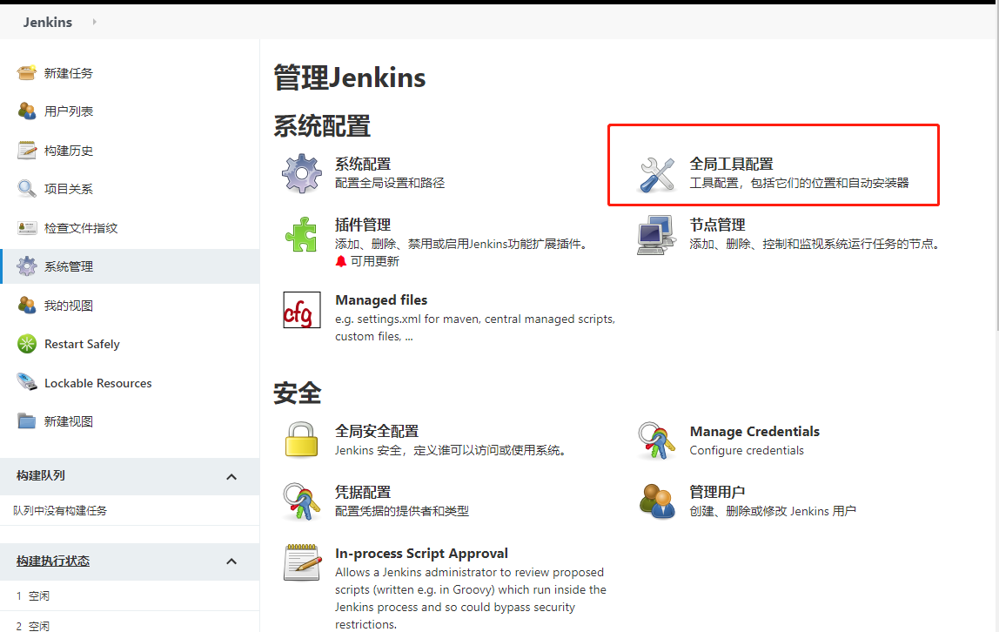
配置nodejs版本：
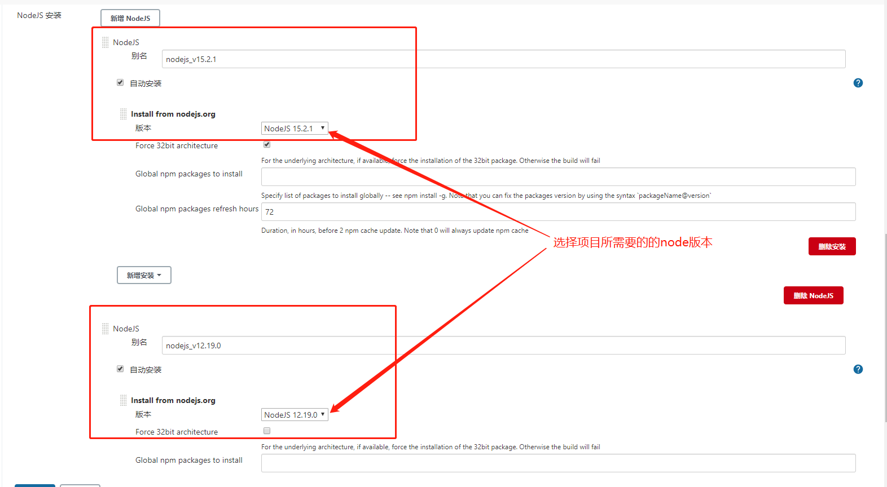
开始创建任务
新建任务-》构建一个自由风格的软件项目
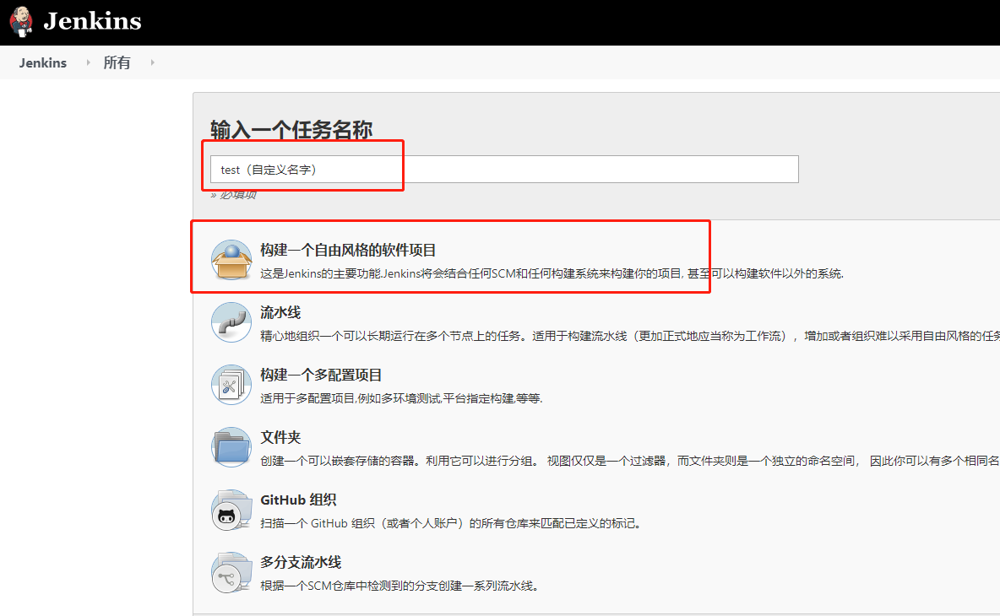
Jenkins关联Github项目地址
进入新建的任务，点击配置，进行一下配置操作：
- github项目路径配置
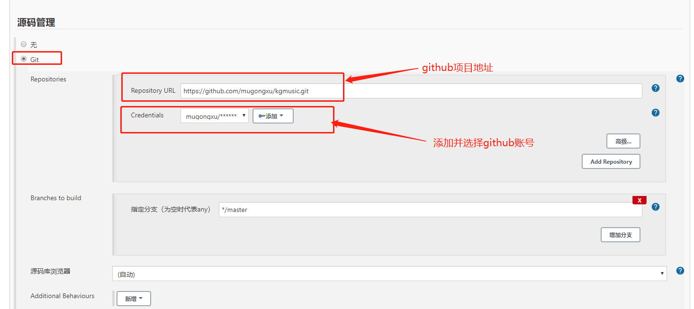 - 点击添加，添加github账户，这里选择使用账号和密码鉴权来拉取代码，也可以选择SSH
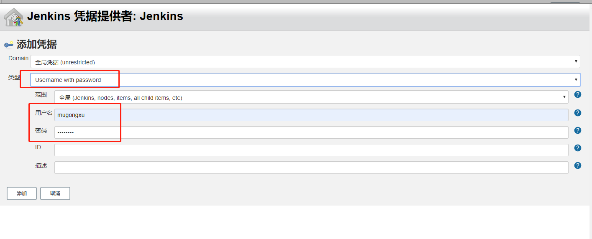 - 选择构建环境并编写shell 命令
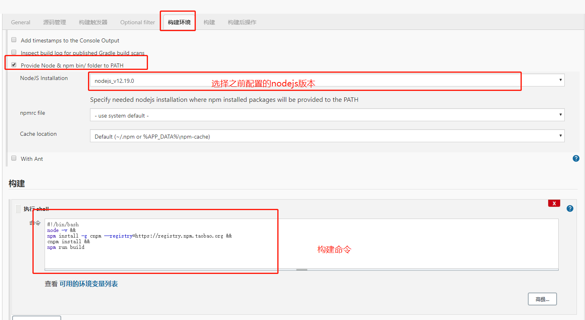
安装淘宝镜像并安装依赖打包：1
2
3
4
5!/bin/bash
node -v &&
npm install -g cnpm --registry=https://registry.npm.taobao.org &&
cnpm install &&
npm run build
配置完成后点击立即构建，等待构建完，点击工作空间，可以发现已经多出一个打包后的目录（Vue项目为dist，这里为React项目的build目录）。点击控制台输出可以查看详细构建log
a.立即构建：
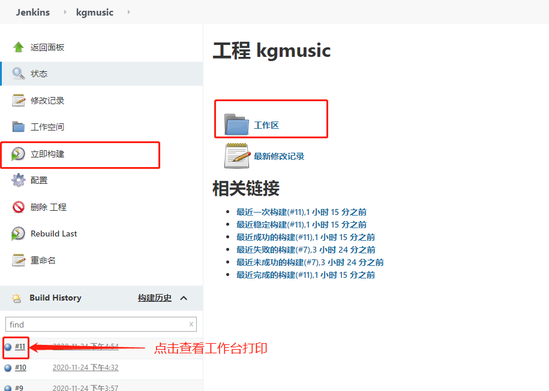
b.工作区：
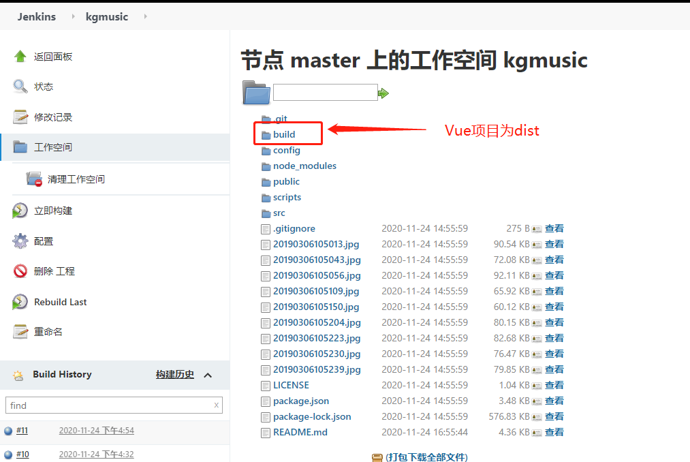
c.LOG打印：
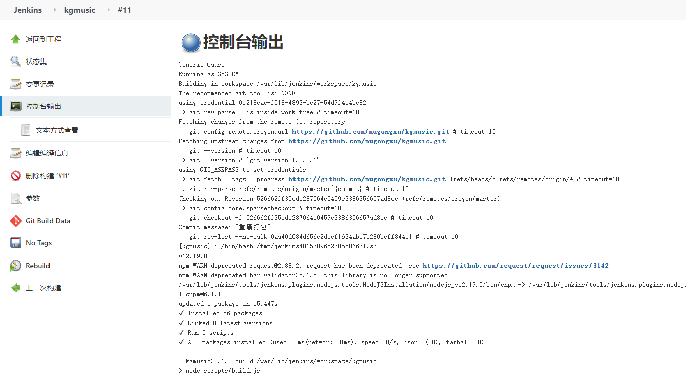
到这里已经实现了本地代码提交到github，然后在jenkins上点击构建，可以拉取代码并且打包，下一步实现打包后的dist(build)目录放到目标服务器上。
部署到目标服务器
安装Publish Over SSH 插件
安装完插件后，在系统管理-> 系统设置-> Publish over SSH 里设置服务器相关信息配置Publish Over SSH
相关配置项注释：1
2
3
4
5
6
7
8
9
10
11
12
13
14
15
16SSH登录模式配置：使用密码模式登录可以不填
Passphrase：密码（key的密码，没设置就是空）
Path to key：key文件（私钥）的路径
Key：将私钥复制到这个框中(path to key和key写一个即可)
SSH Servers的配置：
SSH Server Name：标识的名字（随便你取什么）
Hostname：需要连接ssh的主机名或ip地址（建议ip）
Username：登录服务器用户名
Remote Directory：远程目录（即项目在你的服务器的位置，如：/data/ui/kgmusic）
高级配置：
Use password authentication, or use a different key：勾选这个可以使用密码登录，不想配ssh的可以用这个先试试
Passphrase / Password：密码登录模式的Username对应的登录密码
Port：端口（默认22）
Timeout (ms)：超时时间（毫秒）默认300000
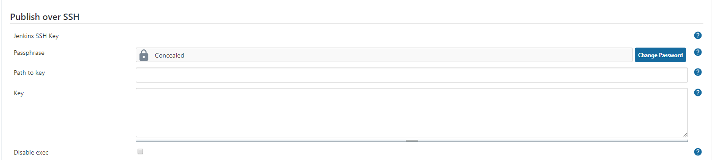
这里使用账号密码登录，上面的SSH key可以全为空不填：
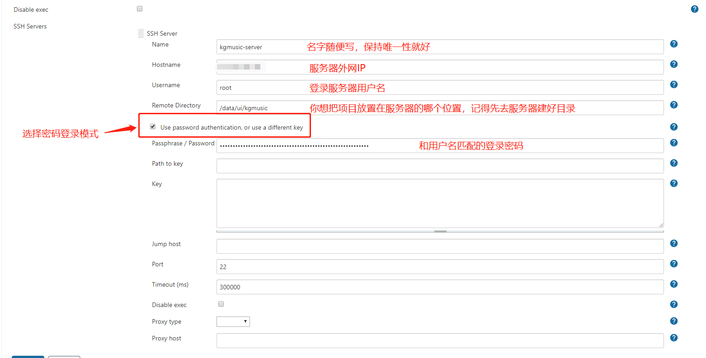
填写完后点击test，出现Success说明配置成功:
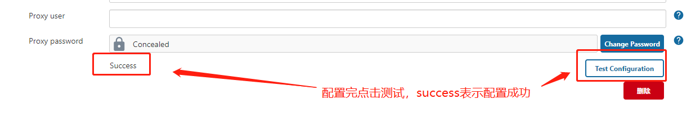
实际生产中，项目需要进行负载均衡，那就需要将项目部署到多个服务器上，这时我们可以新增多个SSH Server（其他配置都相同，只是Hostname以及登录服务器的Username和Passphrase，按实际情况填写）
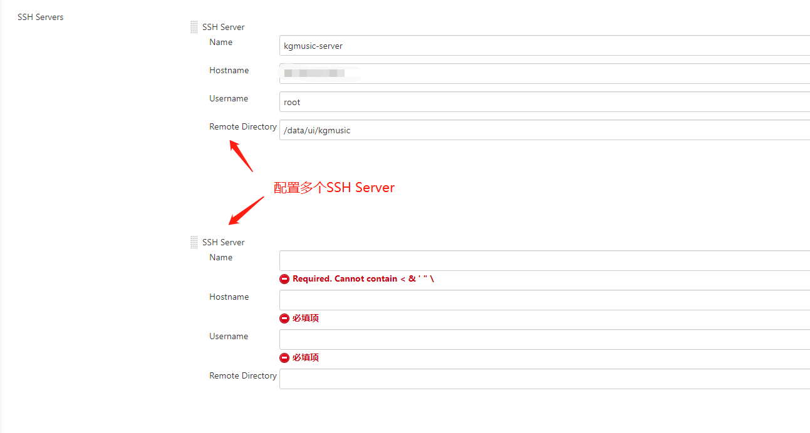
修改任务的构建shell
我的视图 -> 当前项目任务 -> 配置 -> 构建：
构建shell增加将build目录下所有文件打包（Vue项目为dist目录下）
构建shell命令：1
2
3
4
5
6
7!/bin/bash
node -v &&
npm install -g cnpm --registry=https://registry.npm.taobao.org &&
cnpm install &&
npm run build &&
cd build &&
tar -zcvf build.tar.gz *配置构建后操作
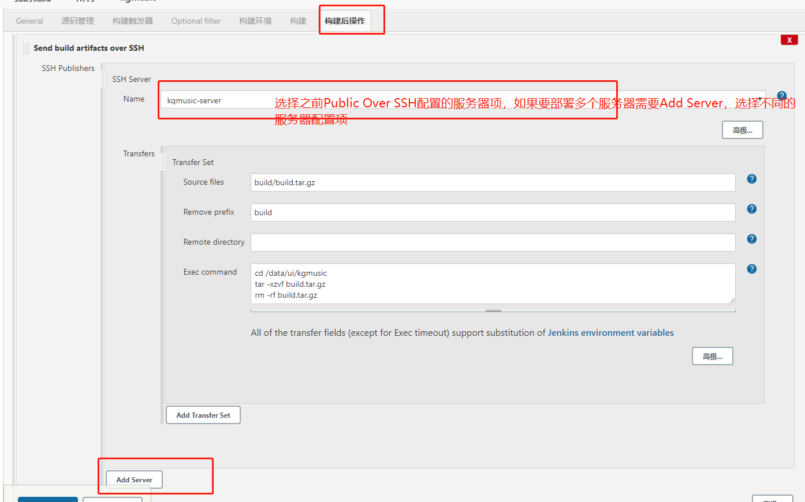1
2
3
4
5Name: 选择一个你配好的ssh服务器
Source files：写你要传输的文件路径
Remove prefix：要去掉的前缀，不写远程服务器的目录结构将和Source files写的一致
Remote directory：写你要部署在远程服务器的那个目录地址下，不写就是SSH Servers配置里默认远程目录
Exec command：传输完了要执行的命令，我这里执行了进入kgmusic目录,解压缩,解压缩完成后删除压缩包三个命令
1 | Exec command：解压文件并删除压缩包 |
填完后执行构建。成功后登录我们目标服务器发现kgmusic目录下有了要运行的文件：
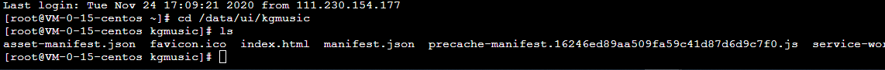
接下来实现开发本地push代码到github上后，触发Webhook，jenkins自动执行构建。
触发Webhook，jenkins自动执行构建
步骤：
- jenkins安装Generic Webhook Trigger 插件
- github添加触发器
在之前的kgmusic工程任务 -》 配置 -》 构建触发器，选择Generic Webhook Trigger
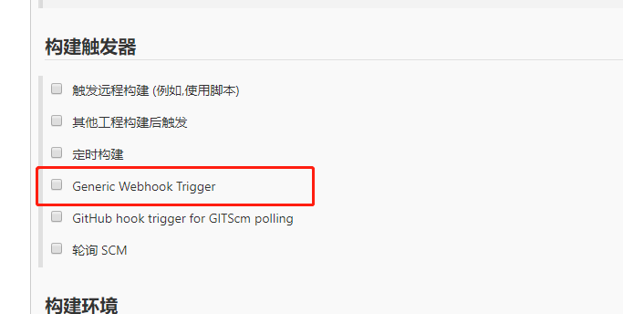
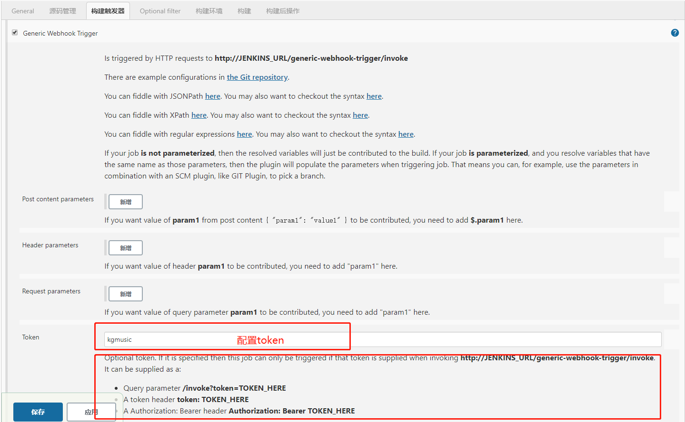
填写token（随便填写）
选择github项目中的Settings -》 Webhooks>add webhook
配置方式按上图红框中的格式，选择在push代码时触发webhook，成功后会在下方出现一个绿色的小勾勾
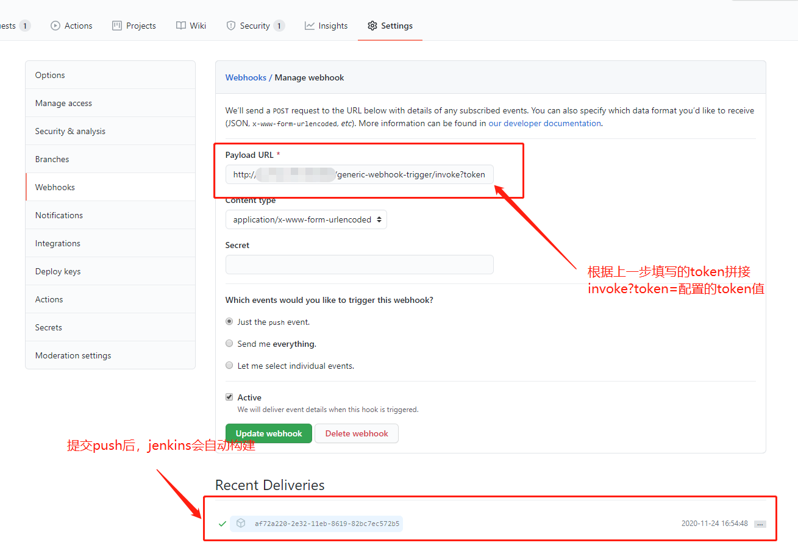
简单的jenkins结合github的自动化发版流程就搭建完了。看个人需求了，手动触发构建就不需要Webhook了，如果是监听特有分支(master)的push行为，就可以使用Webhook自动构建。